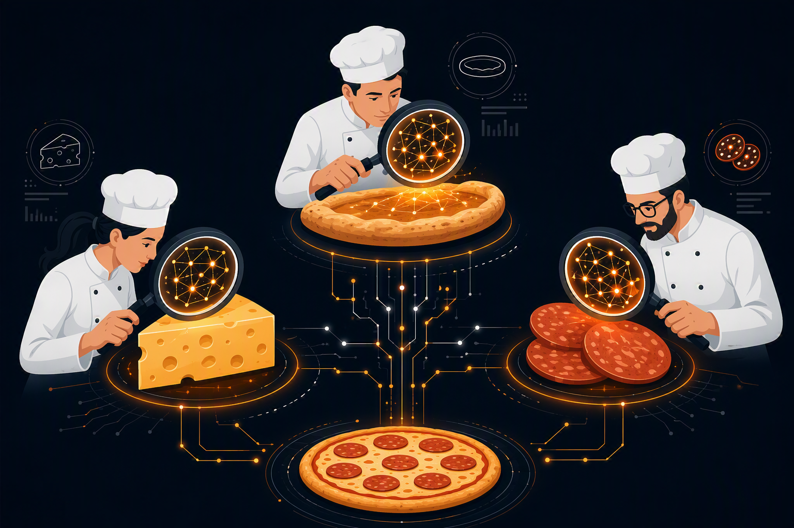

A conceptual breakdown designed to explain Neural Networks using a relatable "Pizza Committee" analogy. This artifact translates complex algorithmic architectures into accessible concepts for non-technical audiences.
To apply communication and information presentation strategies—such as chunking, storytelling, and progressive disclosure—to simplify complex machine learning concepts. This ensures technical knowledge is accessible to all stakeholders, fostering organizational understanding and change readiness.
To bridge the gap between highly technical architecture and general business comprehension, Generative AI was leveraged to brainstorm and refine analogies that explain Neural Networks in layman's terms. A strategic communication framework was then designed around the best concepts. Storytelling methodologies were applied to abstract complex mechanics—such as hidden layers, loss functions, and backpropagation—into a highly relatable, non-intimidating analogy optimized for non-technical stakeholders.
Generative AI (Analogy Brainstorming & Simplification) and Communication & Storytelling Strategies.
Demonstrates the ability to act as a change leader by translating highly technical AI/ML architectures into digestible, relatable business language. This capability is crucial for gaining stakeholder buy-in, aligning cross-functional teams, and successfully driving AI adoption within enterprises.
"If you can't explain it simply, you don't understand it well enough." — Taking Albert Einstein’s advice to heart, this breakdown tackles the concept of Neural Networks in Machine Learning by applying specific communication strategies—storytelling, chunking information, and progressive disclosure—to demystify Neural Networks concept.
What is a Neural Network?Imagine a highly organized committee of food critics tasked with one job: looking at a mystery dish and deciding if it is a pizza. Instead of one person looking at the whole dish and guessing, the committee divides the work into three distinct groups (or "layers"). In traditional computer programming, we give a computer explicit, step-by-step rules (e.g., "If the dish has cheese and pepperoni, then it is a pizza"). However, in Machine Learning, we don't provide the rules. Instead, we provide thousands of examples, and the network is forced to figure out the rules on its own. By breaking down complex, messy data—like images, text, or audio—into tiny, manageable pieces, these interconnected layers work together to recognize patterns, just like our committee of experts collaborating to identify a dish. |
1. The Front Door Team — The Input LayerThis group receives the mystery dish first. They don’t make any big decisions; they just observe raw data and pass it to the experts. Their main job is simply to break down the overall picture into tiny, measurable details. They do not know what a pizza is; they just record the colors, shapes, and textures exactly as they see them before sending the notes forward.
Critique: "It is round, it is flat, and it is red on top."
|
|
2. The Specialists — The Hidden LayersThis is where the real work happens. The Front Door Team passes their notes to a middle group of specialists. Each specialist is only looking for one specific thing based on the notes they received.
They combine these individual clues and pass their findings to the final boss. |
 |
3. The Head Chef — The Output LayerThe Head Chef takes the combined reports from the specialists and makes the final prediction. This final layer acts as the ultimate decision-maker. It calculates the probability based on the weight of the evidence provided. If the cheese and crust signals from the specialists are very strong, the Chef can confidently declare the final output.
Chef: "Based on the melted cheese, baked dough, and pepperoni, I am 98% sure this is a pizza."
|
|
What happens if the Head Chef confidently yells "Pizza!" but the dish was actually a fruit tart? This is where the "learning" in Machine Learning actually happens. A manager steps in and says, "Wrong! You failed." (In AI, this error measurement is called the Loss Function). The Head Chef then yells backward at the specialists, telling them to adjust their standards. The Cheese Expert learns not to confuse cream cheese with mozzarella, and the Crust Expert learns to look closer at the dough. (In AI, this adjustment process is called Backpropagation). They repeat this process thousands of times with thousands of dishes. Eventually, the committee’s internal communication becomes so perfectly tuned that they almost never get it wrong. |
Understanding Machine Learning does not require a background in advanced mathematics. By stripping away intimidating jargon and focusing on the core mechanics—input, pattern recognition, and feedback—complex technical concepts become highly accessible. This shared understanding empowers cross-functional teams to make informed, confident decisions when integrating AI into quality assurance and development lifecycles.